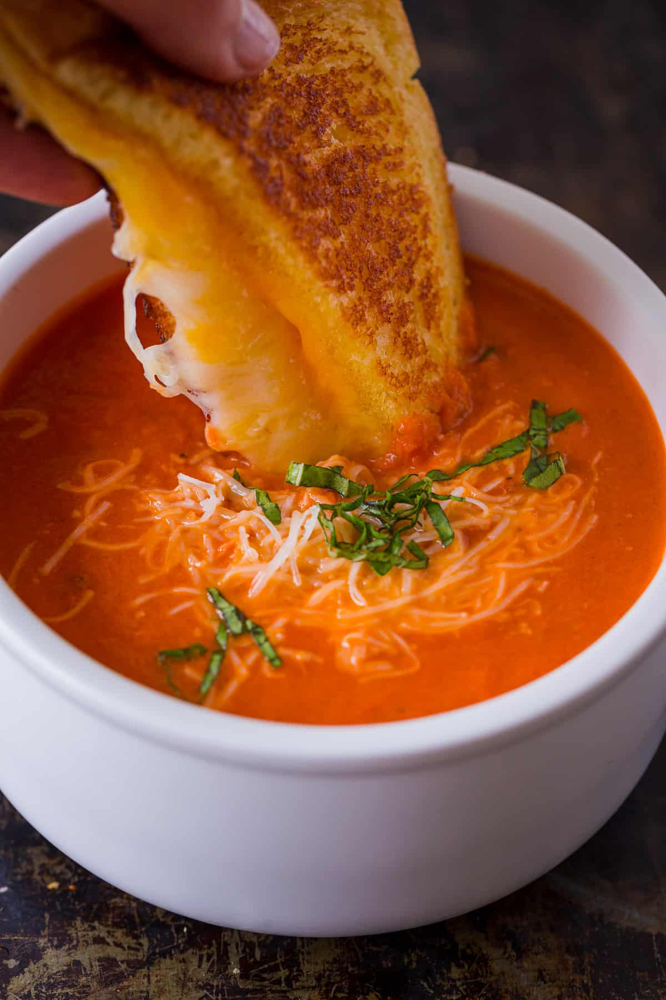

This Creamy Tomato Soup is easy, comforting, and has a rich flavor profile. Watch the easy video tutorial and
you’ll be craving a bowl of tomato soup paired with a gooey Grilled Cheese Sandwich.
My husband never loved tomato soup until he tried this Creamy Tomato Soup. The addition of parmesan and just 1/2
cup of cream makes it so satisfying. It’s also a quick and easy 30-minute soup that keeps well in the fridge. We
love it all year round and whip up a batch any time we are craving Grilled Cheese Sandwiches.
Ingredients
Since this is a tomato-based soup, it is important to offset the acidity with some key ingredients. We use a
combination of cream, parmesan, and a little sugar to balance the soup.
Butter – use unsalted butter to sautee onions
Yellow onion – it seems like a ton of onion but it dissapears into the soup adding a balanced sweetness
Garlic – you’ll need 1 Tbsp minced from about 3 cloves
Crushed tomatoes – with their juice, preferably San Marzano tomatoes
Chicken stock – for the best flavor use homemade chicken broth
Basil – chop and add 1/4 cup fresh basil, plus more to serve. Basil leaves are easily bruised so chop by
stacking a bunch of leaves then roll them into a log and cut into thin strips.
Sugar – It’s just 1 Tbsp, but necessary to combat the tomato acidity.
Black pepper – start with 1/2 tsp and add more to taste.
Whipping cream – adds a creaminess to the soup and offsets acidity.
Parmesan cheese – adds saltiness to the soup and balances acidity. Adding parmesan adds enough salt and I
usually don’t add more.
How to Make Tomato Soup
Saute Aromatics – heat a non-reactive pot over medium heat. Melt in 4 Tbsp butter then sautee onions until
softened and golden (10-12 min). Add minced garlic and saute another minute.
Make the tomato soup base – stir in two 28 oz cans of crushed tomatoes with their juice, your chicken stock,
chopped basil, sugar and black pepper. Bring to a boil then reduce heat, partially cover and simmer 10
minutes.
Blend if desired – use an immersion blender in the pot or blend in
batches using a blender (be careful not
to overfill the blender with hot liquid) and return soup to the pot.
Add cream and parmesan – stir in the heavy cream and shredded parmesan. Return to a simmer and season to
taste if needed.
Serve – ladle into warm bowls and garnish with more parmesan and basil.

Important: Use a Non-Reactive Pot
Since this soup is tomato-based it is important to use a non-reactive pot. Avoid aluminum, cast iron, and copper
which are all made of metals that can react with tomatoes and make the soup taste metallic.
Non-reactive pots that work well include: Stainless steel, enamel-coated cast iron, ceramic, and glass. We used
our 5 1/2 Qt enamel-coated dutch oven pot.
How to Serve Tomato Soup
Grilled Cheese – tomato soup and grilled
cheese sandwiches are the perfect match (try dipping the sandwich
into the soup).
Parmesan – add shredded parmesan while the soup is hot so it melts over the top.
Fresh Basil – sprinkle the top with thinly sliced basil.
Croutons – sprinkle crunchy
croutons over the soup.
Toast – simple toasted bread or crostini (like we made for Bruschetta) are great for dunking into
the soup.
More Comforting Soups
If you love this Tomato Soup, then you won’t want to miss these cozy soup recipes from our easy Chicken Noodle
Soup to luxurious Beef Stew. There’s
something here for everyone.
Our go-to creamy tomato soup recipe. Adding parmesan and heavy cream makes it so satisfying and balances the
acidity. It’s also a quick and easy 30-minute soup that keeps well in the fridge. We love this Tomato Basil
Soup paired with Grilled Cheese
Sandwiches.
PREP: 5 MINS COOK: 25 MINS TOTAL: 30 MINS
Ingredients
Servings: 8 people (1 cup servings)
4 Tbsp unsalted butter
2 yellow onions, (3 cups finely chopped)
3 garlic cloves, (1 Tbsp minced)
56 oz crushed tomatoes, (two, 28-oz cans) with their juice,
preferably San Marzano
1/2 cup heavy whipping cream, or to taste to combat acidity
1/3 cup parmesan cheese, freshly grated, plus more to serve
Instructions
Heat a nonreactive pot or enameled dutch oven over medium heat. Add butter then add chopped onions.
Sauté 10-12 minutes, stirring occasionally, until softened and golden. Add minced garlic and sauté 1
minute until fragrant.
Add crushed tomatoes with their juice, chicken stock, chopped basil, sugar (or add sugar to taste), and
black pepper. Stir together and bring to a boil then reduce heat, partially cover with lid and simmer
for 10 minutes.
You can leave your soup with a chunky consistency, but if you like a blended/creamy soup, use an
immersion blender to blend the soup in the pot to desired consistency or transfer to a blender in
batches and blend until smooth (being careful not to over-fill the blender with hot liquid and pulse a
few times initially to get it started), then return blended soup to the pot over medium heat.
Add 1/2 cup heavy cream, 1/3 cup freshly grated parmesan cheese and return to a simmer. Season to taste
with salt and pepper if needed and turn off the heat.*
Ladle into warm bowls and top with more parmesan and chopped fresh basil.
Notes
*Some crushed tomatoes can seem tangier. If the soup seems too acidic or sour, you can add more heavy cream
and sugar to taste.